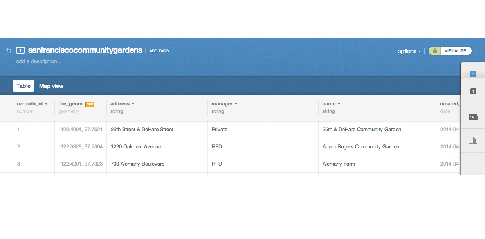
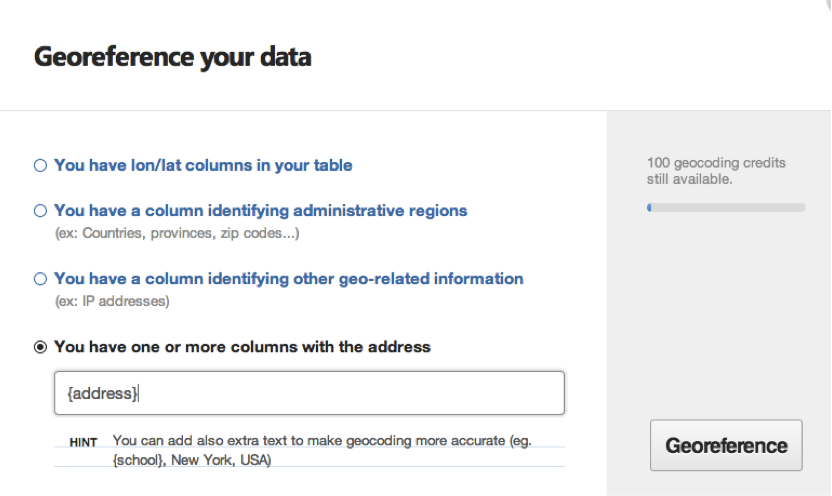

Web Mapping Quickstart
Welcome
| Me → |  |
Stephanie May
(@mizmay or smay@ccsfgis.org)
I have strong opinions about maps
Especially web maps
Who are you?
What we'll cover here:
Session 1: Web mapping platforms and projects
Session 2: Web mapping from scratch
Session 3: Advanced web mapping
What we won't cover
GIS and data wrangling
Web servers and what is required to set up a system for collecting data.
What is a web mapping platform?
Simplest mapping platform: an internet browser
A modern browser conforms to certain standards and conventions in how content is created.
This allows any modern browser to be a web mapping platform.
A web mapping platform that used to be common, but is not any more:
Ten years ago, flash was it
- Embedded reader
- Special coding language
- Complete creative control
Now mainly the subject of derisive jokes
Requires a plugin (install, enable, update, security, crashing)
Doesn’t integrate with other content on the page
Doesn’t work on smartphones and tablets
Often overkill (easier way to achieve the same result)
HTML5 allows much of its functionality (animation, video, audio)
So now your browser is your first, best web mapping platform.
Here are some other web mapping platforms and projects we will discuss today:
CartoDB
MapBox
OpenStreetMap
We'll also do two exercises today:
Exercise 1 focuses on thematic mapping
Exercise 2 focuses on reference mapping
First, let's define some terms
Shapefile
Zip file
Geocoding
Ok, ready for our first exercise!
Exercise 1: Make a Webmap of Community Gardens using CartoDB
Note where you downloaded SanFranciscoCommunityGardens.zip
Create a free CartoDB account for yourself (https://cartodb.com/signup)

A word about geocoding or georeferencing

Click Map View in the upper left corner to see the community garden points on a map of San Francisco.
Modify the basemap
Customize the info windows
Save!
Custom Icon
Custom Basemap
Share!
BREAK
OpenStreetMap http://geospatialrevolution.psu.edu/episode1
What is OpenStreetMap?
... a crowd-sourced reference map
... a community of mappers
Now including you!
Go to OpenStreetMap.org
Search for a place or an address
Find the best match from Nominatum
Click on it to zoom there
Toggle through the different reference layers
Each emphasizing a different set of mappable features

Create an account...
Let's get started!
Two ways to edit OSM: web editor
iD or advanced editor
JOSM
iD: just click edit up in the corner ↖︎
 JOSM
JOSMBut what to edit? Suggestions:
Trace some buildings
Add some addresses...
Add some POIs (points of interest)

Get
outside!Important things to know!
1. No copying from Google products!
OSM portion of this presentation borrows heavily from
OSM 101Presentation made with
big